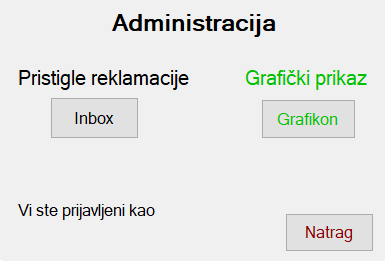

U prozoru Administracija možemo vidjeti tko je prijavljeni administrator.
Prijavljeni administrator ima tri mogućnosti:

Administrator pregledava dolazne reklamacije.
Prikaz zapisa podataka moguće je vidjeti u formatiranom prikazu kao što je pregled najnovijih, najstarijih i sortiranih reklamacija po osobi
Administrator ima uvid u trenutno stanje trgovine u obliku
Svaka stavka je posebno prikazana ili je prikazana kao grafikon s dva elementa za usporedbu